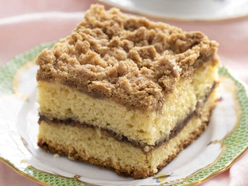

Cofee Cake

Recipe for Cranberry Upside-Down Coffee Cake
Cranberries and pecans are baked in the bottom of this cake. Turn the cake over for ooh's and ah's.
Ingredients
- ⅔ cup packed brown sugar
- ⅓ cup butter
- 1 ¼ cups cranberries
- ½ cup chopped pecans
- ½ cup butter, room temperature
- ¾ cup white sugar
- 2 Eggs
- 1 teaspoon vanilla extract
- 1 cup sour cream
- 1 ½ cups all-purpose flour
- 1 ½ teaspoons baking powder
- 1 teaspoon baking soda
- ½ teaspoon ground cinnamon
- ¼ teaspoon salt
- Preheat oven to 350 degrees F (175 degrees C). Wrap the outside of a 9 inch springform pan with aluminum foil to prevent leaking. Sift together the flour, baking powder, baking soda, cinnamon and salt. Set aside.
- In a saucepan over medium heat, combine brown sugar and 1/3 cup butter. Bring to a boil, then pour into bottom of springform pan. Sprinkle with cranberries and pecans.
- In a large bowl, cream together the butter and 3/4 cup sugar until light and fluffy. Beat in the eggs one at a time, then stir in the vanilla. Beat in the flour mixture alternately with the sour cream. Pour batter into prepared pan.
- Bake in the preheated oven for 60 minutes, or until a toothpick inserted into the center of the cake comes out clean. Cool in pan for 10 minutes, then invert onto serving platter and carefully remove pan. Serve warm.